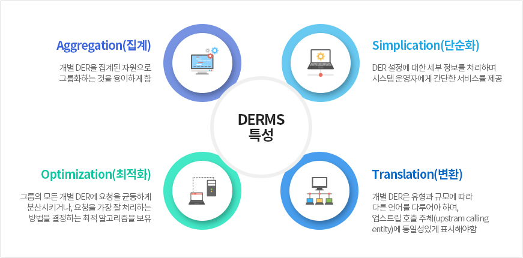

- DERMS 특성
- 집계(Aggregation)
- DERMS는 변전소, 하부 피더, 변압기 등 전력망 구성요소와 일치하는 수준에서 제어 가능한 자원으로써 분산자원의 용량(capability)을 표현
- 단순화(Simplication)
- DERMS 단순화된 중개 서비스를 제공함
- 이때 서비스는 DER 중심이 아닌 전력 시스템을 중심으로 하며, DERMS가 제공하는 단순화된 서비스는 여러 업스트림 호출 주체(upstream
calling entity)의 기능도 지원해야 함
- 최적화(Optimization)
- DERMS는 최소 비용과 최대 전력 품질로 원하는 결과를 얻기 위해 다양한 그룹 내에서 분산자원의 사용을 최적해야 함
- 또한 그룹 내에서 이종(異種)의 다양한 유형의 분산자원을 관리하는 경우 DERMS는 특정 결과를 얻기 위해 개별 DER을 가장 잘 활용하는 방법
을 알아야 하며, 이것은 그룹의 모든 개별 분산자원에 요청을 균등하게 분산시키거나, 요청을 가장 잘 처리하는 방법을 결정하는 알고리즘을
보유하는 것을 포함할 수 있음
- 변환(Translation)
- 개별 분산자원은 유형과 규모에 따라 다른 언어를 사용할 수 있음
- 이에 DERMS는 이러한 다양한 언어를 다루어야 하며, 업스트림 호출 주체(upstream calling entity)에 통일성있게 표시하여 정보는 전달해야 함
- 
DERMS
소개
DERMS